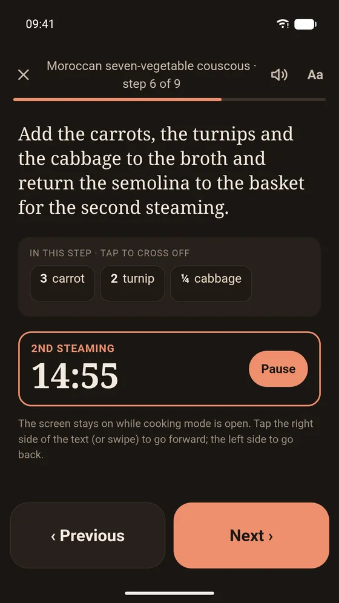
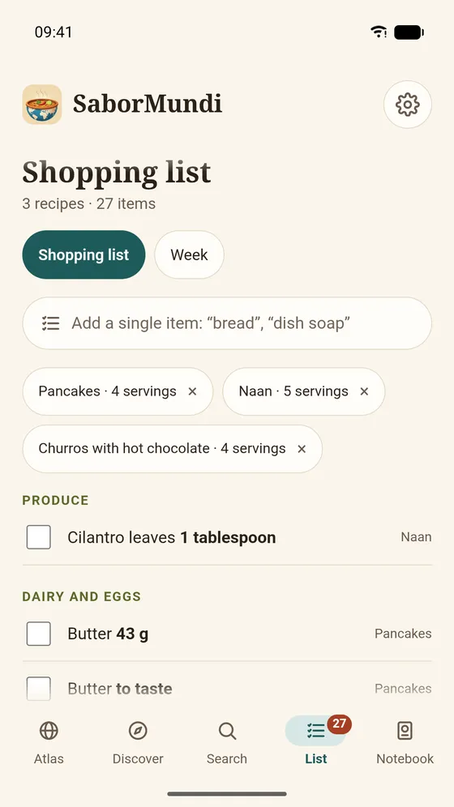
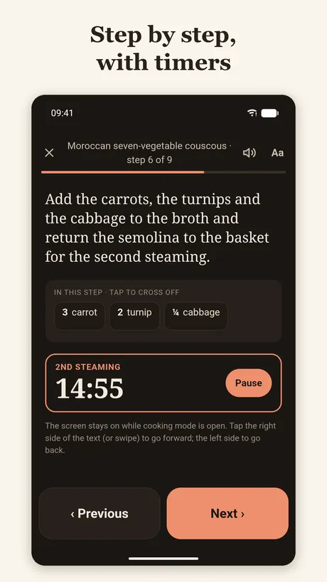
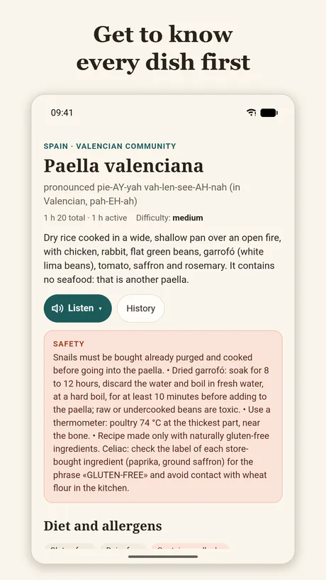

Home
Un piatto dal mondo per cominciare.
La schermata iniziale mostra il piatto del giorno, con foto e luogo d’origine. Cerca per nome o descrizione, oppure sfoglia le ricette in vetrina.

Ricette dal mondo
Ricette tradizionali da tutto il mondo, ognuna con foto, ingredienti, passaggi, allergeni e la storia del piatto. Tutto sul telefono, senza internet e senza account.
Download gratuito · abbonamento mensile o annuale, oppure acquisto unico per aprire tutto
L’app è disponibile in portoghese, inglese e spagnolo.

Pensata per chi ama cucinare e vuole conoscere il piatto prima di mettersi ai fornelli.
Home
La schermata iniziale mostra il piatto del giorno, con foto e luogo d’origine. Cerca per nome o descrizione, oppure sfoglia le ricette in vetrina.
La ricetta
Ogni ricetta ha foto, ingredienti, preparazione, allergeni e la storia del piatto. Regola le porzioni e scegli le misure metriche o statunitensi.
Modalità cucina
In modalità cucina lo schermo mostra un passaggio alla volta, a caratteri grandi, e i timer restano in vista mentre cucini.

Lettura ad alta voce
La voce del tuo dispositivo legge la ricetta ad alta voce e tu hai le mani libere.

Anteprima
Alcune ricette si aprono complete gratis. Le altre mostrano un’anteprima: foto, storia e allergeni.

Ho in casa
Indica cosa hai in cucina e SaborMundi ti mostra le ricette che puoi preparare e cosa manca. Filtra per dieta: vegetariana, vegana, senza glutine, senza latticini.

Lista della spesa
Raccogli gli ingredienti delle ricette scelte in una lista della spesa divisa per reparto e aggiungi tutto ciò che ti serve.

La mia cucina
Segna gli allergeni di chi vive con te. Ogni ricetta che ne contiene uno mostra un avviso in alto ed evidenzia l’ingrediente.

Il download è gratuito e alcune ricette si aprono complete per provare l’app. Un abbonamento mensile o annuale, oppure un acquisto unico, apre tutte le ricette.
Le schermate dell’app (in inglese).







Nessun account, nessuna pubblicità e nessuna raccolta di dati. SaborMundi non si collega mai da sé a internet: ciò che segni resta sul tuo dispositivo ed esce solo quando condividi una ricetta o la lista, o esporti il backup.
Il download è gratuito e alcune ricette si aprono complete senza costi. Le altre mostrano un’anteprima con foto, storia e allergeni. Un abbonamento mensile o annuale, oppure un acquisto unico, le apre tutte. Non c’è pubblicità.
Sì. Ricette, ricerca, modalità cucina e lista della spesa funzionano con il telefono offline. Solo l’acquisto passa dallo store.
In portoghese, inglese e spagnolo.
No. Non c’è registrazione. Per portare i tuoi dati su un altro telefono, esporta il backup.
Le ricette indicano gli allergeni principali e le avvertenze di sicurezza, ma marche e ingredienti variano. Controlla sempre l’etichetta di ogni prodotto e segui le indicazioni del tuo medico o nutrizionista.
Scaricala gratis su iPhone, iPad o Android.